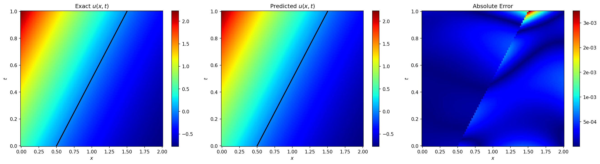
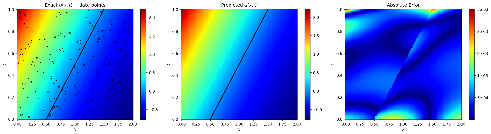
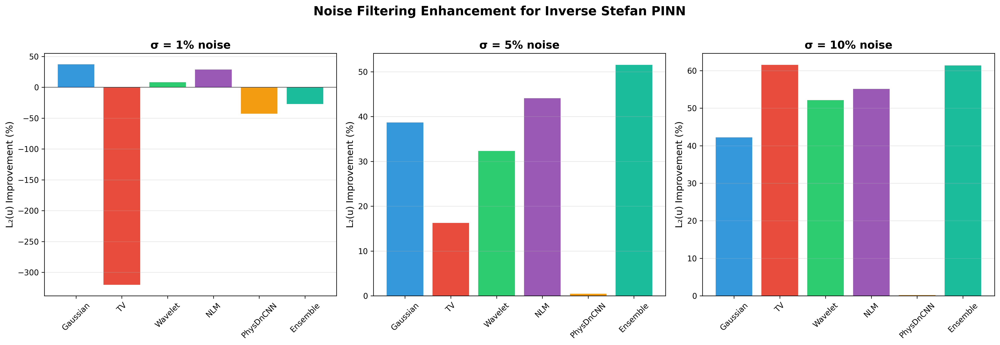

Report on the Research Work of the Master's Student
Improving PINN accuracy for inverse Stefan problems through noise filtering preprocessing
Astana IT University · Trimester 1, 2025–2026
The Stefan problem describes phase-change phenomena — ice melting, metal solidification, crystal growth — where the boundary between two phases moves over time.
Aim: Develop and evaluate a methodology for improving PINN accuracy for inverse Stefan problems through noise filtering preprocessing.
| Stage | Planned | Status |
|---|---|---|
| НИРМ 1 — Literature & Data | Sep–Dec 2025 | Done |
| НИРМ 2 — Noise & Filters | Dec 2025–Feb 2026 | Done |
| НИРМ 3 — PINN Model | Mar–May 2026 | Done |
| НИРМ 4 — Advanced Filters | Sep–Nov 2026 | Done |
| НИРМ 5 — Publications | Dec 2026–Feb 2027 | In Progress |
Two-phase Stefan problem on $x \in [0,1]$, $t \in [0,1]$:
Thermal diffusivities: $k_1 = 2.0$, $k_2 = 1.0$. Exact solution via similarity variables $\eta = x/\sqrt{t}$.
| σ = 1% | Mild — high-precision lab sensors |
| σ = 5% | Moderate — industrial thermocouples |
| σ = 10% | Severe — harsh environments |
| Language | Python 3.10 |
| Framework | PyTorch 2.x + CUDA |
| Libraries | NumPy, SciPy, PyWavelets, scikit-image |
| GPU | NVIDIA RTX 2060 |
| Optimizer | Adam (lr=10⁻³, γ=0.9) |
| Training | 40,000 iterations per run |
Six methods implemented + NoFilter baseline. The core idea: clean the data before PINN training.
| # | Filter | Type | Key Parameters |
|---|---|---|---|
| 1 | Gaussian Smoothing | Classical | $\sigma_{\text{kern}} = \max(0.5, 2\sigma_{\text{noise}})$ |
| 2 | Total Variation (TV) | Edge-preserving | Chambolle algorithm, $\lambda_{\text{TV}} = 0.1 \cdot \sigma_{\text{noise}}$ |
| 3 | Wavelet Thresholding | Multi-scale | Daubechies-4 (db4), BayesShrink soft thresholding |
| 4 | Non-Local Means (NLM) | Patch-based | Patch size & search window adapted to $\sigma_{\text{noise}}$ |
| 5 | PhysDnCNN | Deep Learning | Self-supervised DnCNN (Noise2Self approach) |
| 6 | Ensemble | Hybrid | $0.4 \cdot u_{\text{NLM}} + 0.3 \cdot u_{\text{Gauss}} + 0.3 \cdot u_{\text{Wavelet}}$ |
A rigorous, systematic evaluation across 210 independent training runs.
Forward Stefan problem solved to validate the PINN implementation against known analytical solutions.
✅ Implementation Verified
L₂(u) = 3.12 × 10⁻³ for temperature
L₂(s) = 1.85 × 10⁻³ for moving boundary
Matching results from Wang & Perdikaris (2021)

Predicted temperature field u(x,t) with moving boundary
Unknown boundary conditions recovered from M noisy measurements. Tested with M1 and M2 across noise levels.
The PINN recovers unknown thermal diffusivities:
$k_1 = 1.997$ (true: 2.0) and $k_2 = 1.002$ (true: 1.0)
Within 0.2% of true values

Reconstructed temperature from noisy measurements (M2)
| Filter | σ = 1% | σ = 5% | σ = 10% |
|---|---|---|---|
| NoFilter | 0.227 | 0.982 | 2.043 |
| Gaussian | 0.142 ★ | 0.602 | 1.181 |
| TV | 0.953 | 0.822 | 0.786 ★ |
| Wavelet | 0.208 | 0.664 | 0.978 |
| NLM | 0.161 | 0.549 | 0.917 |
| PhysDnCNN | 0.324 | 0.977 | 2.039 |
| Ensemble | 0.288 | 0.476 ★ | 0.789 |
★ = best per noise level
σ = 1%: Gaussian → 37.4% improvement
σ = 5%: Ensemble → 51.5% improvement
σ = 10%: TV & Ensemble → ~61.5% improvement
PhysDnCNN: <1%
improvement at all levels
Insufficient data
for self-supervised learning
Percentage improvement in L₂(u) error relative to the NoFilter baseline across all configurations.
Key Insight: Simple classical signal processing outperforms deep learning denoisers for small scientific datasets.

Improvement in L₂(u) error relative to NoFilter baseline
Guidelines for practitioners working with noisy Stefan problem data:
| Noise Level | Recommended Filter | Expected Improvement |
|---|---|---|
| Low (σ ≤ 1%) | Gaussian Smoothing | ~37% error reduction |
| Moderate (σ ≈ 5%) | Ensemble (NLM + Gauss + Wavelet) | ~52% error reduction |
| High (σ ≥ 10%) | TV or Ensemble | ~61% error reduction |
| Unknown | Ensemble (default choice) | Robust across all regimes |
💡 For practitioners without time to tune filter parameters:
The Ensemble filter is recommended as the default
choice —
consistently strong across all noise levels without requiring prior noise knowledge.
"Evaluating Noise Filtering Techniques for PINN-Based Solutions of Inverse
Stefan Problems"
Prepared for IEEE SIST 2026
May 13–15, 2026, Astana, Kazakhstan
First complete draft prepared:
32 pages with all chapters
24 references cited
All figures, tables, and appendices included
Full implementation on GitHub:
5 reproducible Jupyter notebooks
Core PINN implementation (PyTorch)
All 6 filter implementations
5 out of 6 filters reduced PINN errors.
Maximum improvement: 61.5% at σ = 10%.
Master's Student Research Work · НИРМ 1
Questions & Discussion